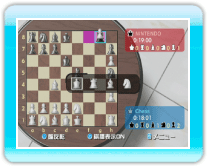

17 |
チェスのルール（2） |
 |
|
● 駒の種類と初期配置 ※白が先手になります。 ※クイーンは自分の駒と同じ色のマスに置かれ、キングはその隣に配置されます。 ・駒の動き
● 駒を取る ・ポーンの場合

● プロモーション ※ポーン以外の駒は、一番上の段まで進んでも駒の種類や動かしかたが変わりません。 ● キャスリング ※下の図では、右下のルークでのキャスリングを説明していますが、左下のルークでも条件を満たしていればキャスリングができます。
※キャスリングするときのみ、キングは2マス動かせます。 ※キャスリングはプレイ中1回しか行えません。 ※初期位置で、キングがある側でのキャスリングを「キングサイド・キャスリング」、クイーンがある側でのキャスリングを「クイーンサイド・キャスリング」と言います。
|
 |
 |
 |